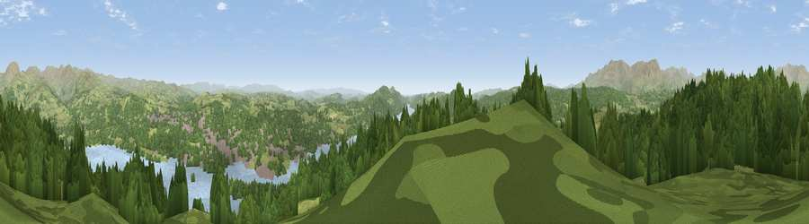

Claife Heights
#1224 in England · top 7% of its area beats it · near Far SawreyWhere it is
The exact computed spot (SD 38225 97362). Click the marker for map links.
The view, rendered

A 360° render of this exact spot computed from the terrain model, tree cover and land cover — summer colours, afternoon light, calibrated against photographs of famous viewpoints. Real trees, hedges and buildings will differ in detail.
The panorama
Grey silhouette: terrain skyline in each direction (720 bearings, Earth curvature and refraction included). Dashed green: skyline with trees (+15 m) and buildings (+8 m) as obstacles. Blue strip: how far the ground is visible on each bearing.
Where the view opens
Wedge length = distance to the farthest visible ground on that bearing (vegetation-aware). Rings at 10, 25 and 50 km.
What fills the view
53% woodland · 32% grassland · 13% water · 2% built-up
Angular shares of the visible panorama (visual magnitude), not map area. Landscape diversity 0.46 (0–1 Shannon).
Key numbers
More beautiful places nearby
The staircase of upgrades: each row has a higher view potential than everything closer. Driving times are estimates from straight-line distance, calibrated against real road routing — check an actual route before setting out.
| Place | Direction | Drive | Score |
|---|---|---|---|
| Wansfell Pike | N · 7 km | ~14 min | 80.6 |
| Viewpoint near Coniston | W · 8 km | ~17 min | 81.4 |
| Viewpoint near Finsthwaite | S · 8 km | ~17 min | 84.7 |
| Viewpoint near Finsthwaite | S · 9 km | ~17 min | 90.3 |
| The Knoll | S · 410 km | ~390 min | 91.0 |
54.36801, -2.95231 · source: osm peak · position refined by local search. Computed location — check access rights before visiting.